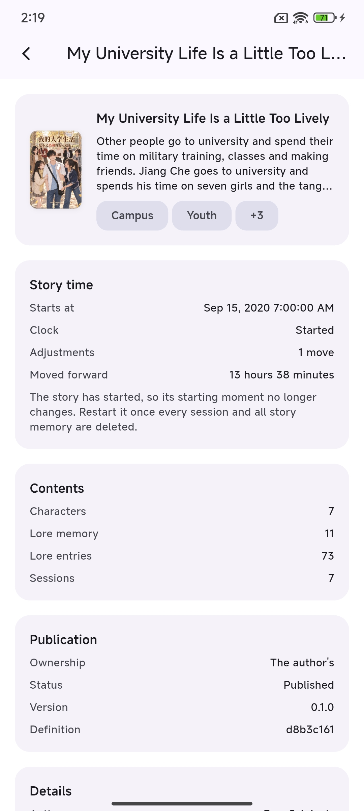

The novel
A world, built before you arrive.
A novel isn't a prompt. It holds the cast, the places and the lore they move through — and one opening moment every story starts from.
- Lore memory the cast can consult
- One opening moment, not a blank page
- One novel at a time, so it stays immersive
